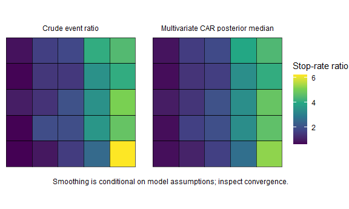
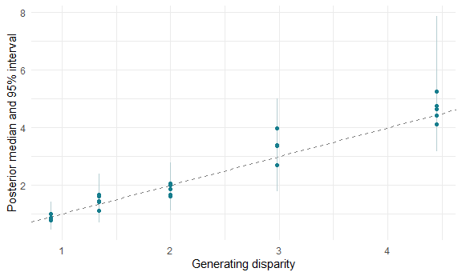
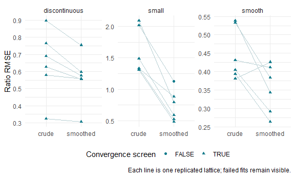

Small-area disparity with spatial smoothing: simulation evidence
Source:vignettes/spatial-simulation.Rmd
spatial-simulation.RmdSmall-area ratios are noisy when counts or comparison populations are small. Spatial smoothing borrows information under a prior about neighbouring areas. It can stabilise estimates, but cannot correct an inappropriate population denominator, missing submissions, unknown ethnicity or anonymised snap points. This vignette reports an explicitly limited, replicated simulation study rather than treating smooth-looking maps as evidence of accuracy.
A spatial model of disparity
sl_spatial_disparity() fits two Poisson responses using
CARBayes::MVS.CARleroux, with a separate population-time
offset for each group. Its linear predictor is
N_ig ~ Poisson(E_ig * theta_ig)
log(theta_ig) = alpha_g + phi_ig
log(disparity_i) = alpha_comparison - alpha_reference
+ phi_i,comparison - phi_i,referenceThe multivariate CAR prior allows spatial correlation and correlation
between group effects. For two groups it has an equivalent
shared/contrast decomposition: u_i = (phi_ir + phi_ic)/2,
v_ir = (phi_ir - phi_ic)/2, v_ic = -v_ir. Thus
phi_ig = u_i + v_ig and the shared part cancels from
disparity. These components inherit the multivariate covariance;
searchlight does not claim to fit three separately identifiable
independent spatial fields from two responses. This differs
fundamentally from assigning one shared spatial effect to both groups,
which would cancel and leave no local disparity surface.
Rook adjacency is the default. Islands require a justified explicit
adjacency matrix; they are never silently linked to a
convenient neighbour. Unknown events are counted in the output but
excluded from the known-group likelihood. Areas without usable exposure
are listed separately. Missing months contribute no time. Spatial models
on records with many points near boundaries raise a warning.
simulation <- sl_simulate(side = 5, seed = 1301)
fit <- sl_spatial_disparity(simulation$counts, simulation$population,
simulation$boundaries, burnin = 2000, n.sample = 12000, thin = 10,
chains = 2, seed = 1351)For a real analysis, inspect diagnostics and extend the chains when necessary. The saved example uses the final run selected by the reproducible simulation script. It retains 1,000 joint draws for compact offline demonstrations; its diagnostics describe the full final chains.
settings <- attr(fit, "mcmc_settings")
settings[c("burnin", "n.sample", "thin", "chains", "seed")]
#> $burnin
#> [1] 2000
#>
#> $n.sample
#> [1] 12000
#>
#> $thin
#> [1] 10
#>
#> $chains
#> [1] 2
#>
#> $seed
#> [1] 1351
diagnostics <- attr(fit, "diagnostics")
knitr::kable(diagnostics, digits = 2)| parameter | rhat | ess_bulk | ess_tail | converged |
|---|---|---|---|---|
| SIM0001 | 1 | 971.49 | 1260.72 | TRUE |
| SIM0002 | 1 | 1148.12 | 1321.58 | TRUE |
| SIM0003 | 1 | 1295.30 | 1780.36 | TRUE |
| SIM0004 | 1 | 1331.49 | 1582.54 | TRUE |
| SIM0005 | 1 | 1397.86 | 1716.21 | TRUE |
| SIM0006 | 1 | 1042.90 | 1315.01 | TRUE |
| SIM0007 | 1 | 1500.59 | 1540.46 | TRUE |
| SIM0008 | 1 | 1428.32 | 1628.19 | TRUE |
| SIM0009 | 1 | 1447.12 | 1779.91 | TRUE |
| SIM0010 | 1 | 1266.36 | 1352.44 | TRUE |
| SIM0011 | 1 | 1335.58 | 1571.31 | TRUE |
| SIM0012 | 1 | 1246.02 | 1399.45 | TRUE |
| SIM0013 | 1 | 1482.70 | 1589.48 | TRUE |
| SIM0014 | 1 | 1516.09 | 1701.91 | TRUE |
| SIM0015 | 1 | 1555.46 | 1437.39 | TRUE |
| SIM0016 | 1 | 1316.30 | 1502.72 | TRUE |
| SIM0017 | 1 | 1575.98 | 1687.12 | TRUE |
| SIM0018 | 1 | 1601.04 | 1736.74 | TRUE |
| SIM0019 | 1 | 1409.12 | 1840.78 | TRUE |
| SIM0020 | 1 | 1180.97 | 1802.26 | TRUE |
| SIM0021 | 1 | 1266.16 | 1544.43 | TRUE |
| SIM0022 | 1 | 1695.60 | 1664.20 | TRUE |
| SIM0023 | 1 | 1721.59 | 1661.11 | TRUE |
| SIM0024 | 1 | 1578.17 | 1654.03 | TRUE |
| SIM0025 | 1 | 1388.27 | 1749.30 | TRUE |
| alpha_reference | 1 | 1273.71 | 1276.21 | TRUE |
| alpha_comparison | 1 | 1514.46 | 1748.83 | TRUE |
| Sigma11 | 1 | 1720.19 | 1783.74 | TRUE |
| Sigma12 | 1 | 2020.84 | 1875.66 | TRUE |
| Sigma22 | 1 | 1754.14 | 1924.99 | TRUE |
| rho | 1 | 1813.22 | 1814.69 | TRUE |
The convergence screen requires rank-normalised split R-hat at most 1.01 and bulk and tail effective sample sizes at least 400 for all area log-ratios and monitored global parameters. These are useful checks, not proof of convergence. The short tests deliberately fail this screen and emit a warning; they test implementation and rough recovery, not reliable production inference.

Both maps use the same colour scale. Intervals and exceedance probabilities, rather than only posterior medians, are available for every area.
knitr::kable(head(as.data.frame(fit)[c("geography_code", "ratio",
"credible_low_95", "credible_high_95", "probability_above_1",
"probability_above_k")]), digits = 3)| geography_code | ratio | credible_low_95 | credible_high_95 | probability_above_1 | probability_above_k |
|---|---|---|---|---|---|
| SIM0001 | 0.786 | 0.441 | 1.314 | 0.183 | 0.000 |
| SIM0002 | 1.101 | 0.689 | 1.762 | 0.655 | 0.006 |
| SIM0003 | 1.669 | 1.110 | 2.491 | 0.992 | 0.203 |
| SIM0004 | 2.675 | 1.776 | 3.911 | 1.000 | 0.923 |
| SIM0005 | 5.250 | 3.686 | 7.854 | 1.000 | 1.000 |
| SIM0006 | 0.765 | 0.470 | 1.139 | 0.106 | 0.000 |
ranks <- sl_ranking_stability(fit, "posterior", n = 500)
knitr::kable(head(as.data.frame(ranks)))| geography_code | median_rank | rank_low | rank_high | effective_draws | method |
|---|---|---|---|---|---|
| SIM0001 | 23 | 19 | 25 | 500 | posterior |
| SIM0002 | 20 | 14 | 25 | 500 | posterior |
| SIM0003 | 15 | 11 | 20 | 500 | posterior |
| SIM0004 | 10 | 6 | 14 | 500 | posterior |
| SIM0005 | 2 | 1 | 6 | 500 | posterior |
| SIM0006 | 24 | 20 | 25 | 500 | posterior |
Recovery independent of total intensity
The generator varies disparity east-west and expected total event intensity north-south. Their correlation is zero on the lattice. Reference and comparison rates are solved jointly to preserve that total intensity while changing disparity. Recovering this pattern therefore tests the group-specific component, rather than merely reproducing a map of all searches.

The full recovery test also checks that posterior ratios reconstructed from group-specific spatial effects equal ratios reconstructed independently from posterior fitted event means and exposures. This detects swapped area/group axes.
Replicated evidence, including failure modes
inst/scripts/simulation-study.R runs three settings on
25-area lattices: smooth variation, a sharp east-west discontinuity, and
comparison populations reduced from 1,000 to 50 per area. Each replicate
generates fresh Poisson counts. The study extends unsuccessful chains up
to 80,000 iterations and retains any remaining convergence failures in
the output. No simulation chooses a seed based on whether smoothing
beats the crude estimator.
knitr::kable(summary, digits = 3)| condition | method | replications | mean_rmse | mean_coverage | mean_rank_recovery | mcse_rmse | mcse_coverage | converged_fits |
|---|---|---|---|---|---|---|---|---|
| discontinuous | crude | 6 | 0.647 | 0.960 | 0.849 | 0.079 | 0.025 | 6 |
| discontinuous | smoothed | 6 | 0.558 | 0.967 | 0.849 | 0.059 | 0.012 | 6 |
| small | crude | 6 | 1.592 | 0.980 | 0.669 | 0.147 | 0.014 | 6 |
| small | smoothed | 6 | 0.733 | 0.993 | 0.862 | 0.102 | 0.007 | 5 |
| smooth | crude | 6 | 0.447 | 0.993 | 0.955 | 0.029 | 0.007 | 6 |
| smooth | smoothed | 6 | 0.353 | 0.993 | 0.976 | 0.027 | 0.007 | 6 |
RMSE measures error on the ratio scale. Coverage is the fraction of generating area ratios in nominal 95% intervals, averaged over replicates. Rank recovery is Spearman correlation; ties in a discontinuous truth surface remain ties. MCSE is the standard deviation of replicate metrics divided by the square root of the replication count. This small pilot does not establish general nominal coverage. Rows with failed convergence must be inspected before substantive interpretation. The table includes every attempted replicate. Metrics from failed chains, if any, describe an unsuccessful fit and are not validated posterior inference.
failed <- replicates[replicates$method == "smoothed" & !replicates$converged,
c("condition", "replicate", "seed", "model_iterations")]
knitr::kable(failed, caption = "Fits still failing the convergence screen at the iteration limit")| condition | replicate | seed | model_iterations |
|---|---|---|---|
| small | 1 | 1501 | 80000 |

Lower average RMSE does not mean every area improves. The following table reports the fraction of individual area estimates with greater absolute error after smoothing, and the signed average change in absolute error.
wide <- tidyr::pivot_wider(areas[c("condition", "replicate", "geography_code",
"truth", "method", "estimate", "model_converged")],
names_from = "method", values_from = "estimate")
wide$error_change <- abs(wide$smoothed - wide$truth) - abs(wide$crude - wide$truth)
harm <- dplyr::summarise(dplyr::group_by(wide, .data$condition, .data$model_converged),
share_with_greater_error = mean(.data$error_change > 0),
mean_absolute_error_change = mean(.data$error_change), .groups = "drop")
knitr::kable(harm, digits = 3)| condition | model_converged | share_with_greater_error | mean_absolute_error_change |
|---|---|---|---|
| discontinuous | TRUE | 0.387 | -0.043 |
| small | FALSE | 0.280 | -0.605 |
| small | TRUE | 0.160 | -0.681 |
| smooth | TRUE | 0.280 | -0.071 |
Neighbour borrowing can blur discontinuities; sparse populations can leave large prior influence. The study quantifies performance only for these generators, populations, priors and count sizes. It does not include location error, unmeasured mobility, changing Census populations, repeated-person dependence or missing submissions. Inspect unsmoothed counts, sensitivity bounds and convergence before using a smoothed map, and report where the estimates become less accurate.
The model interface and covariance structure are documented in the CARBayes package and manual and Lee (2013). The posterior diagnostic documentation describes the convergence statistic used here.